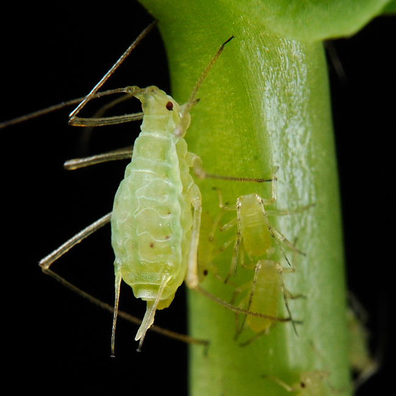
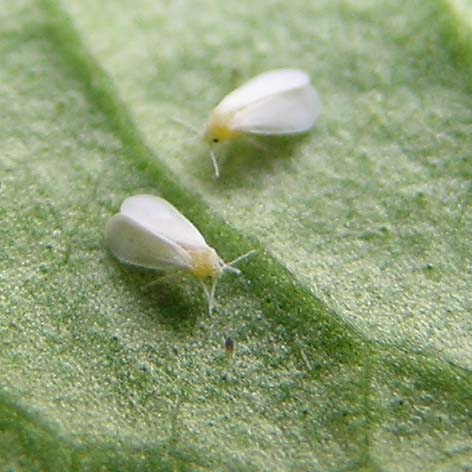
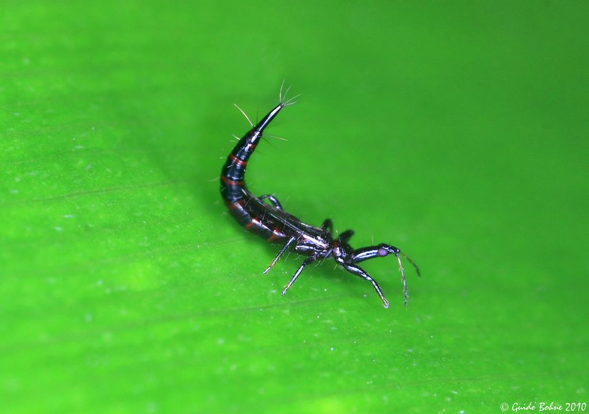

Main content
When you build a hydroponic system of any size, you're going to have to deal with pests at some point. If you're looking for advice on how to protect your hydroponic garden and stop common pests like spider mites, fungus gnats and whiteflies, you're in the right place. We also have the inside scoop on all the common Michigan pests: what they look like, how to get rid of them, and what measures you can take to prevent them becoming a problem again.
Common Pests
Aphids

Also known as greenflies or plant lice, these sap-sucking insects are loved by ants, less so by gardeners.
-
arrow_drop_down_circleSigns & SymptomsAphids often congregate near stems at the tops of plants. Ants are drawn to aphids, so a gathering of ants is a strong indication.
-
arrow_drop_down_circlePreventionAvoid cross-contamination: don't use soil or tools from your exterior garden in your hydroponic set-up. Aphids like synthetic fertilizers.
-
arrow_drop_down_circleTreatmentUse insecticidal soap. Water washes aphids away.
Whiteflies

Whiteflies can be persistent pests in hydroponic gardens.
-
arrow_drop_down_circleSigns & SymptomsWhiteflies feed on leaves' undersides. Their feeding causes yellowing of leaves and white spots.
-
arrow_drop_down_circlePreventionWhiteflies multiply faster in warm conditions.
-
arrow_drop_down_circleTreatmentWhiteflies will relocate to nearby plants if disturbed, so apply insecticide to all plants in the area of an infestation. Scraping the eggs off leaves' undersides and applying neem oil will significantly disrupt nymph growth.
Spider Mites

These tiny spiders can be hard to detect, but are a danger to plants all the same.
-
arrow_drop_down_circleSigns & SymptomsSpider mites spin webbing that can often be easier to spot than the insects themselves. If you see webbing, try wiping the underside of a leaf with a tissue and check it for red streaks.
-
arrow_drop_down_circlePreventionSpider mites enjoy low humidity and breed faster in high temperatures.
-
arrow_drop_down_circleTreatmentIsolate affected plants. Pyrethrin stops them from feeding. Washing leaves in warm, soapy water is effective. Insecticides work, but they can breed resistance over time.
Thrips

Thrips are slender but hungry pests.
-
arrow_drop_down_circleSigns & SymptomsThrips cause browning and drying out of leaves. Look for yellow spots and small dark metallic specks on leaves (thrip feces).
-
arrow_drop_down_circlePreventionThrips multiply and mature faster in warm conditions.
-
arrow_drop_down_circleTreatmentThrips can be removed by hand, but their eggs (small, white and sticky) should be wiped from leaves. Apply insecticidal soap to affected plants.